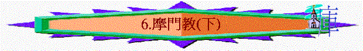
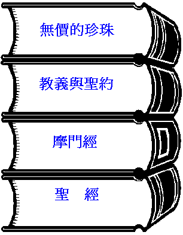
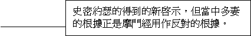
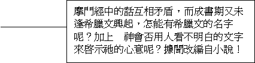
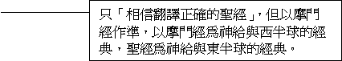
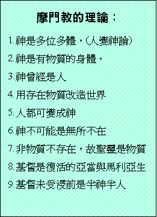
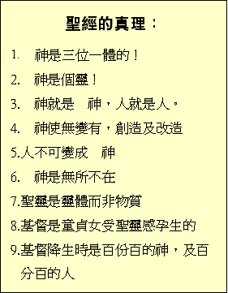
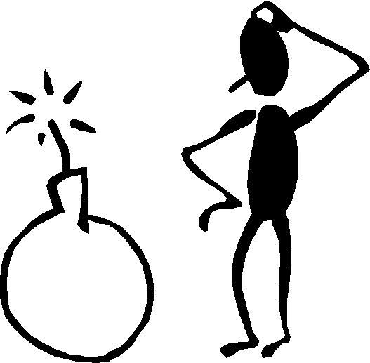
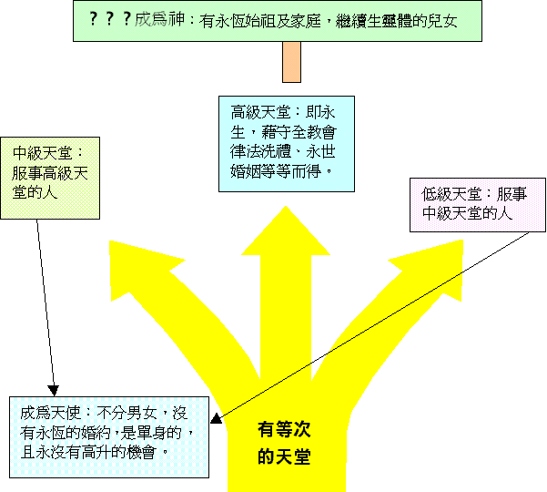
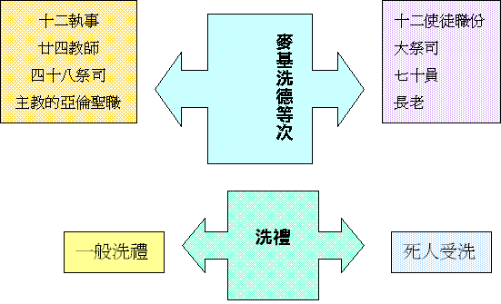

第
六課：摩門教（下）Ｃ）混亂的教義
１）對立的經典：
 |
 |
 |
|
|
 |
２）邪惡的神論
 |
 |
３）可怖的思想
亞當墮落是人順服 神的表現？？？
亞當犯罪，為帶來人的幸福？？？
基督的救贖是有限，必須靠人行善化？？？
 ４）物質的天堂 
５）強加的制度

Ｄ）謹慎的應對
| 反思信仰 | 真理輔導 | |
| 了解對方 | 提醒未信者 |
ａ）聖經
摩門教徒說他們
「相信翻譯正確的聖經」，但當聖經與摩門經有衝突時，則以摩門經作準。他們以聖經為 神給東半球的經典，摩門經為給西半球的經典。並以以西結書卅七：15-17 作根據。以猶太的扙為「聖經」而以蓮的扙為「摩門經」，以接連成一根即兩部經書同為耶穌基督作見證。辯證：聖經以西結書中的預言是指向以色列家合一的問題，根本不是預言摩門經的出現。
ｂ）摩門經
根據摩門教的宣稱為由史密約瑟得到天使摩羅乃的指引，又得烏陵和土明的幫助而翻譯出來。摩門經乃由改良的埃及文所寫成。
辯證：
ｉ）
根據考得里奧利佛的後人考得里威里所著的「WHO REALLY WROTE THE BOOK OF MORMON」揭發摩門經乃根據一失意的牧師的構思小說改編而成，是因這牧師的手稿為出版社所拒絕出版，又因他逝世而留在這出版社中。及後為另一名離職牧師發現，想藉此故事吸引當時的信徒歸向支持他，因而與史密約瑟合作制造了摩門經的面世。ｉｉ）
另摩門經中的話互相矛盾，因在摩門經中的尼腓二書預言李海的後裔中必興起一人作先知，但摩門經的序言卻以「摩門經是......由外邦人而問世，將 神藉著恩賜而譯成。」而摩門經中又以李海的後裔尼腓族被殺盡，而拉曼族又被 神刑罰變作印第安人，那麼怎會有史密約瑟這後裔出現？又怎麼會是白種人呢？今天摩門教雖解釋「猶太人即信主的外邦人」仍不能解決預言上的矛盾。ｉｉｉ）
摩門經中尼腓二書是被認為寫於主前五五九至五四五年，怎可能叫人「跟從耶穌」呢？因主耶穌還要在五百多年後才降生，舊約中又沒有預言主的名字叫「耶穌」，加上「耶穌這名是希臘文，在寫尼腓二書的時候，希臘文化仍未普及，又加上摩門經以改良埃及人所寫，怎會出現了希臘文的字句呢？ｉｖ）
摩門教的改良埃及文說法不足信，因他們以這種文字是沒有人可以閱讀，與 神啟示的方式不同， 神從不以一種人看不明白的文字來記錄聖經的真理。ｃ）教義與聖約
為史密約瑟的得到的新啟示，摩門教徒認為書中的啟示是 神命令他們研讀及遵守的。
辯正：
摩門經指責多妻的惡行，又以多妻為 神所憎惡，又禁止人以亞伯拉罕及大衛等舊約聖徒作多妻的前例，但教義與聖約中卻以這些聖徒作多妻的前例。若真是出於 神的啟示又豈會是而又非，可見這二書明顯不是 神的啟示。ｄ）無價的珍珠
為史密約瑟自稱於一八三零年六月及十二月間所得的啟示，關乎摩西的寫作及一些有關地球創造的資料。
辯正：
史密約瑟以此其中的「亞伯罕書」；是從改良埃及文中翻譯出來，但經由他們中間一位傑出的埃及語專家傑姆爾遜博士所證實，這只不過是一個埃及的葬禮原文，並不是甚麼亞伯拉罕書，並且博士一家於一九七五年十二月八日離開摩門教，並稱這個為種族岐視的教會。２）論神：
摩門教在教義約一書中，以父神及主耶穌是有可以摸的骨肉身體，聖靈是沒有骨肉的身體......並所有的靈都是物質，又妄用聖經林前八：5 的話而強稱有許多的神。並且摩門教又以神是要先存的靈，經在地上得著肉身而得以進化為更高級的位置及可以享受到不同等級的天堂快樂。從而引進「人的進化為神」的概念，又妄用聖經創三：5 的話作根據。
辯正：
摩門教前後期的教導矛盾，早期是一神論，後期是多神論，因想不通三位一體而推算出許多神來。根據約四：24的話「 神是個靈」並不不是物質，因不明白聖經的記錄手法而將 神看為物質的神。加上人變神論的出現，引致以人墮落才有快樂才可以得著肉身經歷進化階段。此為否認了人犯罪是可惡的事實，又將救贖的必需更改了。３）復活：
摩門教將復活分作兩類，第一是全部復活即所有的人；按普遍救贖論都會死後復活。第二是兩次復活，第一次復活又分作三個時期，第一第二時期可以上高級天堂，第三時期可以上中等天堂，第二次復活的人只可以入下等天堂。只有一部份太壞的人才會滅亡。要上高級天堂的人必須要得到摩門教的婚姻新永約，中等天堂的人是接受摩門教或其他異教不知律法者或高尚而受蒙蔽的人。而低級天堂是不接受基督福音的人。
辯正：
聖經沒有三等天堂之分，這只是人的自高的心理作崇。他們所根據三層天的話而推論三等天堂是不合理又荒謬的事，並且婚禮是否比救贖及 神的主權更重要呢？４）聖職：
他們制定了亞倫及麥基洗德聖職，從而發展出十二使徒職份大祭司及七十員，長老等麥基洗德聖職，又發展出十二執事、廿四教師、四十八祭司及主教的亞倫聖職。
辯正：
舊約亞倫的祭司體系只有利未支派亞倫的後裔才可以擔任，若摩門教徒真為以法蓮的後裔，他們根本不可以擔任此祭司的職任。而麥基洗德的祭司職任更不是一般人可以得到的，加上新約中信徒皆為祭司，根本不用再重拾舊約的祭司體系。５）聖禮：
ａ）一般洗禮：
為摩門教徒的洗禮。ｂ）死人受洗：
為死去的家人編定族譜，並且代他們受洗。他們有家譜中心，位於鹽湖城東南方的一座花崗巖山洞中，並將家譜制成微型菲林。辯正：
聖經中論及死人受洗的事，不是指代已死去的人受洗，乃是指這些人活著時曾受洗，並不是指為死去的人代受洗。